目录
下载
请前往github下载，只支援win系统。
前言
这是为了方便上传blog到github而制作的粗劣应用，如果不幸遇到了bug，请联系我。
程序使用pyside2编写，只是方便了执行命令和处理md文件而已。在将md文件移到博客内时，如果想要展示图片，就只能将图片放到和md文件同名的文件夹下。这一操作十分繁杂，于是就有了这个应用。同时增加了执行命令的功能。
需要注意，程序不可以在含有中文的目录下运行。
配置文件
在打开应用后，应该能看到以下界面：
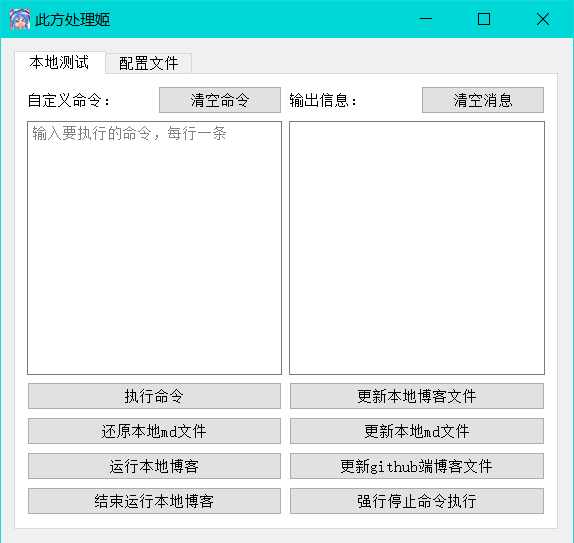
对于初次使用，需要打开配置文件选项并配置好基本设置，如下：
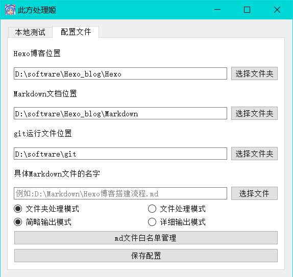
博客位置：你的博客所在地，指的是有
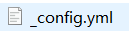
这个文件的目录，同时，这个目录也应该还有这些文件夹：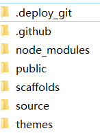
Markdown文档位置：字面意思，markdown文件集中管理的地方。这个应用是以我的实际情况来编写的，在我的markdown文档集中文件夹中，有许多markdown文件和一些散乱的图片，这是为了之后的更新和还原本地md文件而准备的。大概就是如下的情况：
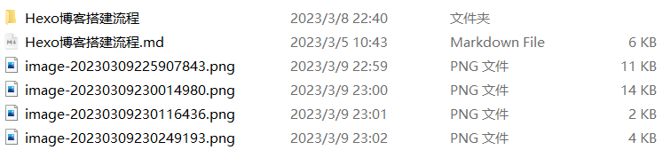
文件夹是可有可无的，因为在之后应用的处理中会自动创建，而另一些图片则是md文件所依赖的图片。总的来说，如果想要使用之后的md文件处理的功能，只需要在填入的文件夹的位置存在md文件就好，这个文件夹的位置也可以随时变化，不用担心之后会无法使用。
git运行文件位置：在这个文件夹里，应该能看到如下的两个文件：
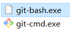
第一个文件没有图标是一些我的个人问题，忽略就好，只要名字一样就可以。
具体Markdown文件的名字：这个是选填，也不会保存。在填后就会在处理md文件时只处理选填的文件。
请注意，填写的md文件必须在填写的markdown文件夹下。
文件夹模式：在这个模式勾选后，点击本地测试的更新本地md文件时会先在本地生成一个和md文件名字相同的文件夹，同时会将此md文件中所有依赖的图片转移到对应文件夹里。然后将对应的图片和md文件统一复制到hexo博客放置md文件的位置。就是Hexo\source_posts这个文件夹下。
文件模式：唯一和文件夹模式不同的是，不会生成文件夹。需要注意的是，如果是已经经过了md文件处理的md文件，则需要先执行本地测试中的“还原md文件”。注意，对于处理模式的选择是不会保存的。
简略输出模式：在执行命令时，不会显示额外的内容，只会显示最基本的。
详细输出模式：会显示详细内容，包括程序执行的命令，系统返回的结果等，如下：
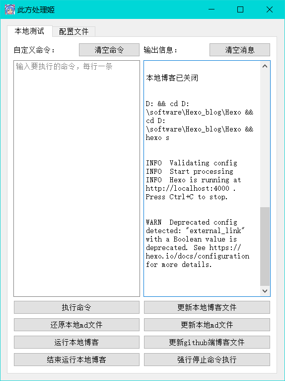
简略模式则不会输出这些额外的内容。这个选项也不会保存。
md文件白名单管理：字面意思，打开后会弹出如下弹窗：
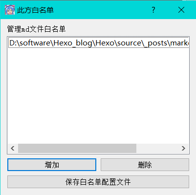
支持直接拖拽文件获取路径，只支持*.md文件，在更改完后需要保存，否则就不会保存。
在输入完各个文件的位置后请注意保存，否则下次打开应用就需要重新输入。
本地测试
执行命令：字面意思，程序会执行输入的命令，默认运行的文件夹位置是在填入的hexo博客处。如下：
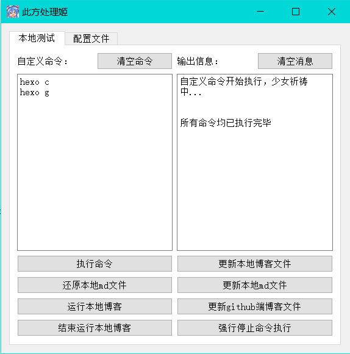
这是主要功能之一，在搭建博客时我便对git无法使用“ctrl+v”而深感苦恼，这里支持使用复制，不会乱码。且可以一次执行多个命令，需要注意的是，如果执行了“hexo s”则需要点击结束运行本地博客后才能继续。且在执行命令后，在命令执行完毕前尽量不要进行其他动作，这是不安全的行为。在打开详细模式后会看到更多显示，如下：
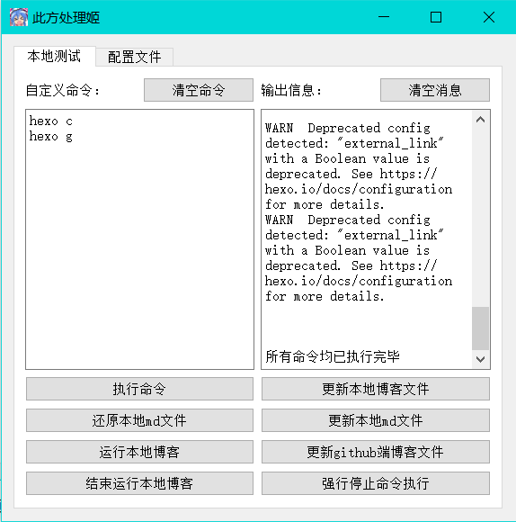
更新本地文件：本质是执行”hexo c && hexo g”
更新githbu端博客文件：本质是执行”hexo d”
运行本地博客：本质是执行”hexo s”
结束运行本地博客：本质是找到通过控制台找到占用对应4000端口的程序，然后关闭。
强行停止命令执行：很不安全的行为！如果不是实在没有办法就不要点击这个，它会强行结束掉所有与python相关的和占用4000端口的程序。
更新本地md文件：在没有填写具体md文件名字的情况下，它会处理所有填写在Markdown文档位置的md文件。会寻找md文案，然后找到依赖的图片文件，最后将图片放在同名文件夹里（图片必须在当前文件夹，否则会跳过此图片）。之后再将md文件和对应图片复制到博客对应的文件夹下。
在填写md文件名字后就只会处理填了名字的唯一文件了。请注意，填写的md文件必须在填写的markdown文件夹下。
效果展示，处理之前：
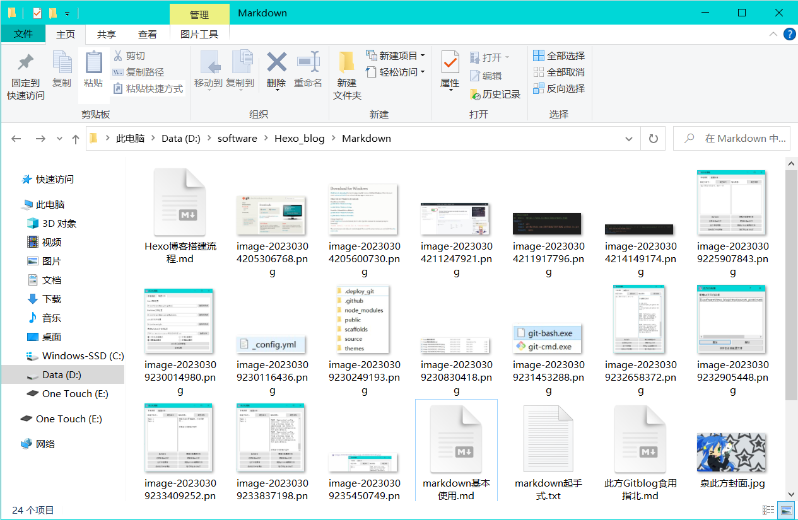
处理之后：
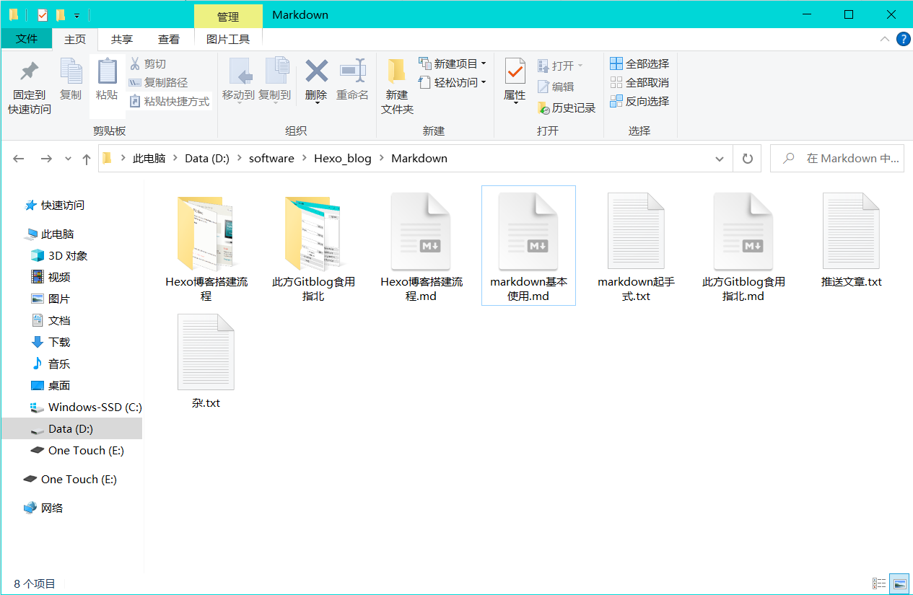
还原本地md文件：在没有填写具体md文件名字的情况下，它会处理所有填写在Markdown文档位置的md文件。将对应md文件中依赖的图片从文件夹里复制到当前文件夹下。如图：
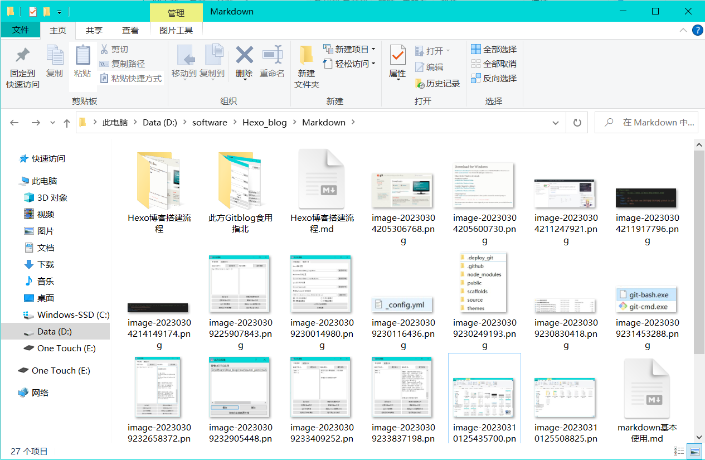
与还原之前的唯一区别是多了两个文件夹，在再次进行md文件处理后，这些零散的图片就会被清空和整理，变成如上面图片一样的被处理的状态。
对于博客文件夹内的md文件则不会处理。
这也是这个程序的主要功能，在编写md文档后，如果想要再次修改，就需要麻烦地反复移动md文件依赖的图片。但在使用这个之后就不用总是在图片的海洋中遨游了。